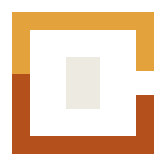

◎
Plan before
you act.
Make the agent’s proposed path visible so a goal can become a sequence of useful, reviewable steps.
goal→plan→result

stirkaian agent system made with Kirn
Stirk AI is an early-stage project for creating AI agents with Kirn—agents that can reason about a goal, use tools, and keep the work moving with a clear trail of intent.
An agent should make the next step visible.
read the latest project changes
✓inspect git history and issues
→compose a concise summary
···Stirk explores a practical kind of agency: start with a human goal, break it into understandable steps, use the right tools, and leave behind a trace people can inspect.
The project is early and evolving. Its agent model, interfaces, and implementation are being shaped in public with Kirn.
Make the agent’s proposed path visible so a goal can become a sequence of useful, reviewable steps.
Give agents purposeful tools and clear permissions, keeping action close to the context that justifies it.
Keep useful context available without turning every decision into an opaque conversation.
03 / A CLEARER LOOP
Stirk is being shaped around a loop that people can follow. A capable agent should be useful without becoming mysterious.
04 / THE SHAPE
Stirk’s long-term shape is a set of focused agents and tools that can work together: each one understandable on its own, more capable when composed.
05 / PART OF KIRN
Stirk is one part of a wider ecosystem created around Kirn: a language, editor, package registry, terminal, and operating system that can grow together.
06 / THE ROAD AHEAD
Stirk AI is an early-stage project. The next steps are about turning agent concepts into reliable primitives, inspectable workflows, and useful experiments written in Kirn.
Read the work, follow the experiments, and help shape agentic tools in Kirn.